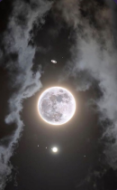

LUA
A Lua é o nosso vizinho celestial mais próximo e uma fascinante companheira da Terra! Conhecida por sua beleza e mistério, a Lua influencia as marés e tem fases que mudam ao longo do mês, de uma lua cheia iluminada a uma lua nova escura. A superfície da Lua é cheia de crateras e montanhas, formadas por impactos de asteroides ao longo de bilhões de anos. E a melhor parte? Os humanos já pisaram na Lua durante as missões Apollo, deixando pegadas que permanecerão por milhões de anos!
A Lua é como uma lanterna no céu noturno, sempre nos encantando com seu brilho. É o único satélite natural da Terra e um lugar cheio de histórias antigas, com crateras e mares lunares visíveis a olho nu. A Lua tem um lado oculto, que nunca vemos da Terra, conhecido como o "lado escuro". Além de influenciar as marés, a Lua tem fases que mudam a cada noite, tornando-a uma presença constante e mágica no céu. E quem sabe? Talvez um dia a gente possa visitar novamente!